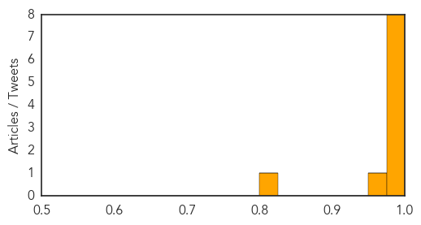
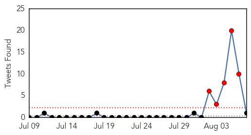

Chikungunya
30-Day Web Trend
1 alerts, 0 warnings

30-Day Twitter Trend
3 alerts, 0 warnings

Article Locations
Article Confidences
Top Articles:
- 0.999
- State's 1st Case Of Chikungunya Virus Confirmed In Central Texas
- 0.999
- Detection of Chikungunya virus adds to local public health concerns
- 0.994
- Texas county reports chikungunya-positive mosquito
- 0.994
- Texas county reports chikungunya-positive mosquito
- 0.990
- North Carolina scientists research chikungunya vaccine
- 0.987
- Harris County confirms first mosquito carrying chikungunya virus
- 0.984
- Cases of tropical diseases on rise in Riviera
- 0.983
- News Scan for Aug 07, 2014
- 0.964
- Doctors In U.S. On High Alert For Chikungunya Virus « CBS New York
- 0.818
- Dallas County health officials on the lookout for chikungunya virus
Top Tweets:
-
No tweets found for Aug 07, 2014
Unknown
30-Day Web Trend
0 alerts, 5 warnings

30-Day Twitter Trend
5 alerts, 0 warnings

Article Locations

Article Confidences

Top Articles:
- 0.995
- Ukiah hotel being examined as likely cause for 3 Legionnaires' cases
- 0.963
- African swine fever sweeps across Baltic states
- 0.952
- Ghana meets Guinea worm eradication criteria
- 0.917
- Chicago Tribune
- 0.917
- Chicago Tribune
- 0.917
- Chicago Tribune
- 0.917
- Chicago Tribune
- 0.916
- Malaria epidemic fears in Bokaro
- 0.910
- The world windows to Thailand
- 0.910
- The world windows to Thailand
- 0.910
- The world windows to Thailand
- 0.885
- Ukiah's Discovery Inn cooperating with Legionnaires' disease investigation
- 0.866
- THAILAND PRESS-Japanese sought in surrogacy scam flees
- 0.866
- No U.S. air strikes have taken place in Iraq
- 0.866
- Loud explosion in Baghdad
- 0.866
- Putin talks Moscow's food import ban with Kazakh, Belarussian leaders -Kremlin
- 0.866
- Biden, Poroshenko concerned about Russia military buildup -White House
- 0.840
- Big stride as 8.6mn children are vaccinated against polio - Kenya
- 0.800
- 31 CNU students to be tested for tuberculosis after exposure
- 0.781
- 2.7 million Ugandans safe from river blindness
- 0.753
- Social dynamics beats penicillin in stopping syphilis outbreaks
- 0.749
- Encephalitis: Three more deaths, toll reaches 140
- 0.728
- FAO trains farmers to tackle lethal maize disease
- 0.702
- State warns of algal blooms detected in area waters
- 0.675
- European Medicines Agency Accepts Application Seeking New Indication For Prevenar 13®1 For Prevention Of Pneumococcal Pneumonia In Adults
- 0.666
- EU ships vaccines to halt foot-and-mouth in Algeria and Tunisia
- 0.659
- Protecting Yourself Against Rabies
- 0.636
- KUNA : Algeria battles against foot-and-mouth disease
- 0.633
- "Rabbit Fever" Warning Issued in CO
- 0.618
- Recent rise in bat encounters prompts rabies warning - Lethbridge
- 0.610
- *Rx for Readers: Is alarmist ad campaign’s vaccine as necessary as its sponsors say?*
- 0.602
- Deadly canine parvovirus sweeps through Cornwall, Ont.
- 0.587
- Test opens way for Creutzfeldt-Jacob disease screening before symptoms show
- 0.567
- Chemicals found in water seen as no health danger Hawaii News, Honolulu, Honolulu News, Sports, Editorial, Features, Travel and Business
- 0.552
- 21 sterilization vehicles deployed, disease spread closely monitored
- 0.546
- New Tests could Potentially Detect Creutzfeldt-Jakob Disease : Experts : Counsel & Heal
- 0.541
- Soligenix Advances Development of a Heat Stable Rapidly Acting Anthrax Vaccine VeloThrax™
- 0.514
- Sudan Red Crescent assists flood affected populations - Sudan
- 0.504
- Rats for cash in the Philippines
Top Tweets:
- 0.774
- Con apoyo de PQM, PharmaChk es una innovación prometedora para el control de calidad de medicina en zonas remotas malaria